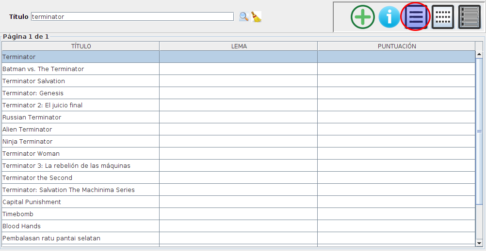
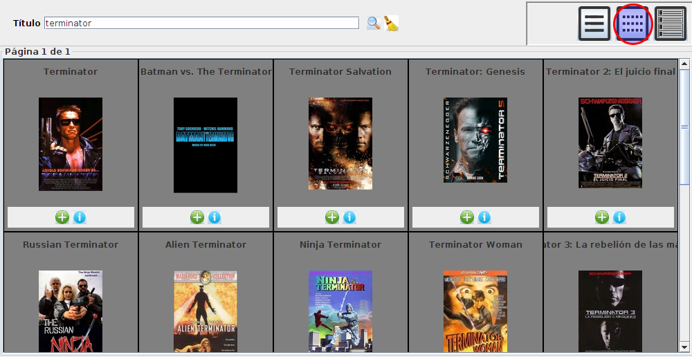
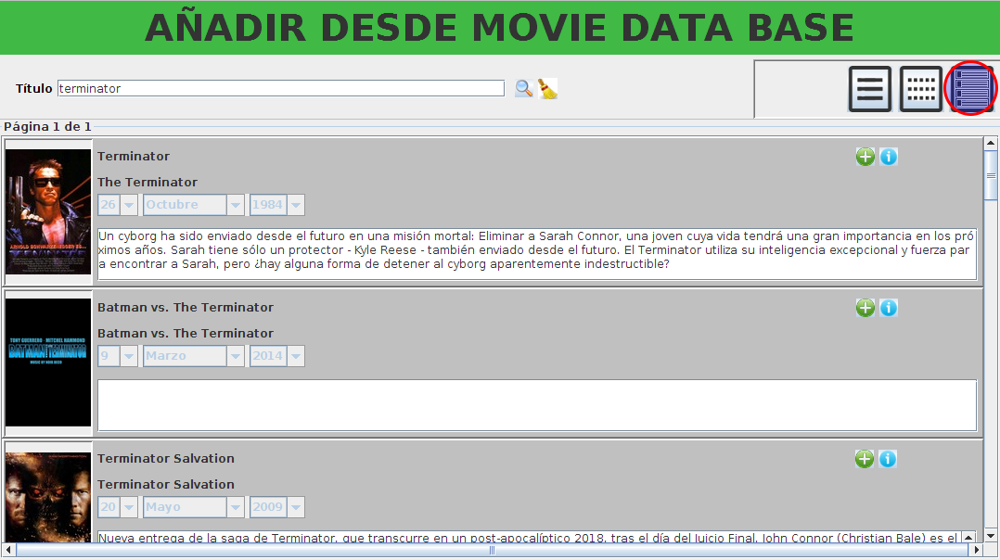
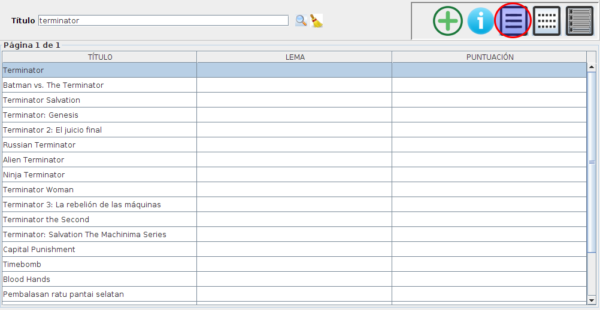
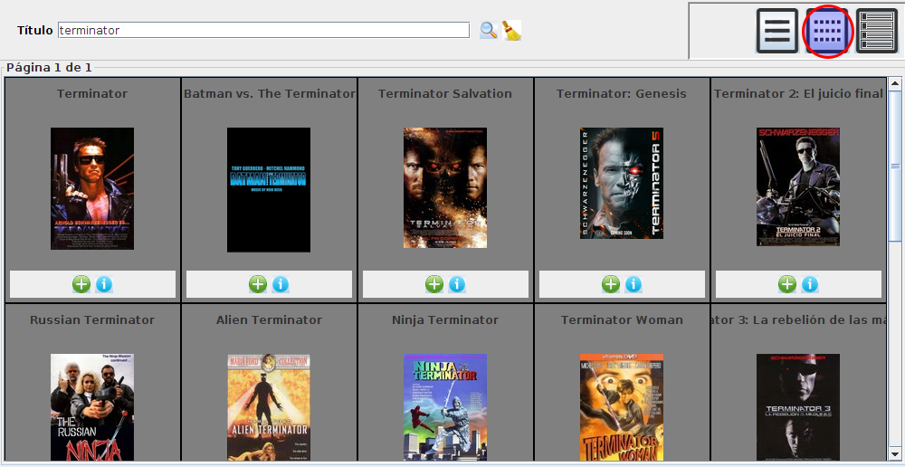
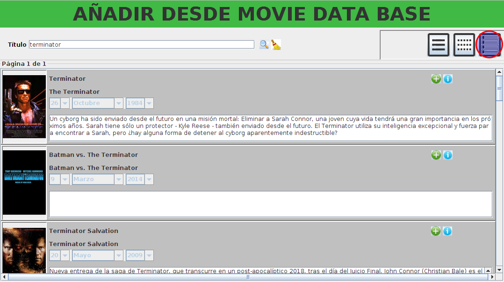

Lista

Mosaico

Detallada

Para añadir una película desde MovieDataBase vaya este icono de la aplicación
Una vez dentro de esta opción vaya a la caja de texto y escriba el título que desea buscar, pulse enter o el icono buscar para ver los resulados.
Para limpiar las búsquedas pulse el icono limpiar
Una vez obtenido los resultados, podrá visualizar los resultados en modo vista, mosaico o detallado.
En cualquiera de estas vistas, podrá pulsar el icono de információn  para ver detalle
de la película seleccionada,
o pulsar el botón de añadir
para ver detalle
de la película seleccionada,
o pulsar el botón de añadir  , para agregarla a nuesta base de datos
, para agregarla a nuesta base de datos
Lista

Mosaico

Detallada
